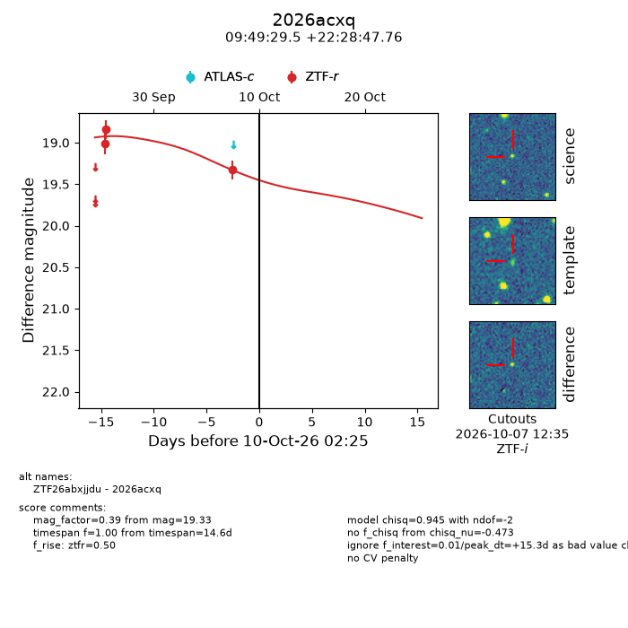
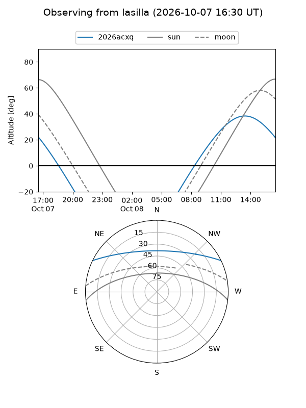
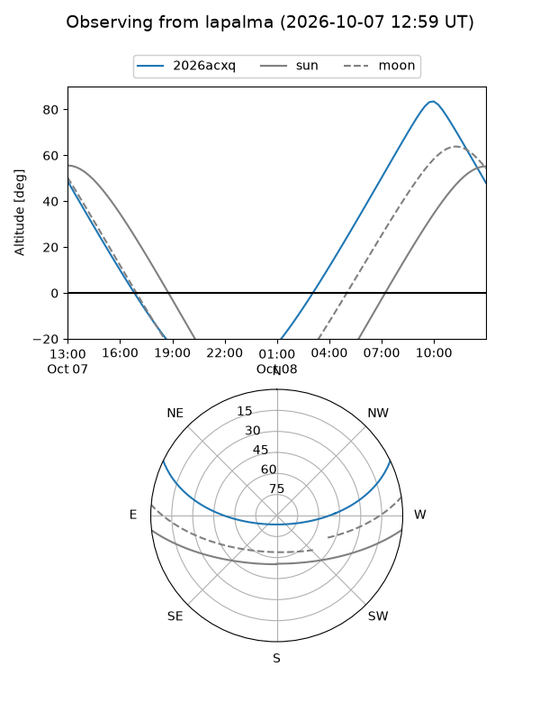
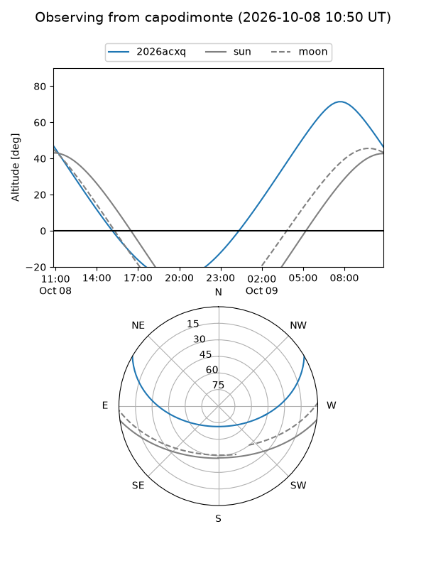
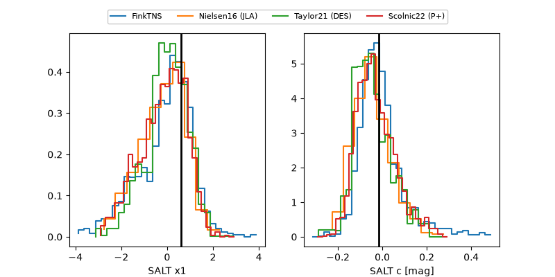

2026acxq
Target 2026acxq at 2026-10-10 14:21
Aliases and brokers:
FINK-ZTF: ztf.fink-portal.org/ZTF26abxjjdu
Lasair-ZTF: lasair-ztf.lsst.ac.uk/objects/ZTF26abxjjdu
ALeRCE-ZTF: alerce.online/object/ZTF26abxjjdu
YSE-PZ: ziggy.ucolick.org/yse/transient_detail/2026acxq
TNS name: wis-tns.org/object/2026acxq
Direct TNS query: direct search
alt names
ZTF26abxjjdu (ztf,fink_ztf)
2026acxq (tns,yse)
Coordinates:
equatorial (ra, dec) = 147.3727,+22.47993
equatorial (HMS+DMS) = 09:49:29.46,+22:28:47.76
galactic (l, b) = (209.0329,+48.66720)
Flags:
peak dt: +15.8
Photometry:
last ztfr=19.33
3 ztfr detections
Lightcurve

Visibility



Additional plots
